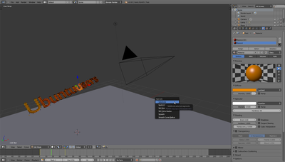
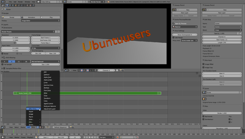
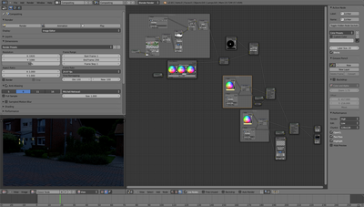

Blender 3D
Dieser Artikel wurde für die folgenden Ubuntu-Versionen getestet:
Ubuntu 16.04 Xenial Xerus
Ubuntu 14.04 Trusty Tahr
Zum Verständnis dieses Artikels sind folgende Seiten hilfreich:
Blender  ist ein Open-Source-Kreativ-Tool für Künstler, kleine Teams und größere Produktionen. Es bringt alle Tools für eine vollwertige 3D-, VFX- oder Filmproduktion mit sich. Neben komplexen 3D Renderings oder Simulationen, Compositing Arbeiten oder Videoschnitt können auch ganze 3D Spiele erstellt werden - alles mit einem Programm.
ist ein Open-Source-Kreativ-Tool für Künstler, kleine Teams und größere Produktionen. Es bringt alle Tools für eine vollwertige 3D-, VFX- oder Filmproduktion mit sich. Neben komplexen 3D Renderings oder Simulationen, Compositing Arbeiten oder Videoschnitt können auch ganze 3D Spiele erstellt werden - alles mit einem Programm.
  
Blender-Funktionen: Features
Funktionen¶
Allgemein¶
hochwertiges Mesh-Editing
Multiresolution Sculpting mit Dynamischer-Flächenunterteilung
Nodebasiertes Compositing
Renderer, Engines¶
Blender Render (Raytracing Rendering)
Cycles Render (physikalisch basierter Renderer)
Game Engine
erweiterbar um externe Renderer
Editoren für¶
3D Objekte
Bilder, Grafiken
Keyframes (Schlüsselbilder)
Animationskurven
Animations-Sequenzen (NLA Editor)
Video Schnitt, Sequenzen
Masken, Tracking
Nodes (Compositing, Shader, Texturen)
Text, Scripting
Installation¶
Paketquelle¶
Es muss das Paket
blender (universe)
 mit apturl
mit apturl
Paketliste zum Kopieren:
sudo apt-get install blender
sudo aptitude install blender
installiert werden [1]. blender kann direkt gestartet werden [3]. In den Anwendungsmenüs findet man Blender jeweils mit zwei Optionen ("(Fenstermodus)" und "(Vollbildschirm)") unter "Anwendungen -> Grafik -> Blender" bzw. "Graphik -> Blender".
Projektseite¶
Möchte man eine aktuellere Version von Blender nutzen als diejenige, die aus den Paketquellen installiert werden kann, so können von der offiziellen Webseite fertige Programmarchive mit vorkompilierten ausführbaren Dateien heruntergeladen werden. Das Programm muss also weder kompiliert noch im eigentlichen Sinne installiert, sondern das Programmarchiv lediglich in ein Verzeichnis entpackt werden [2]. Um Blender zu starten, ruft man einfach die ausführbare Datei blender im entpackten Verzeichnis auf.
Das Verzeichnis des entpackten Programmarchivs kann man beliebig auf dem System ablegen. Für ein Mehrbenutzersystem, auf dem alle Benutzer Zugriff auf die Software haben sollen, empfiehlt es sich, das Verzeichnis nach /opt zu verschieben. Für Einzelbenutzersystem, bzw. wenn die Software nur einem Benutzer zur Verfügen stehen soll, kann man das Verzeichnis auch einfach im Benutzerverzeichnis belassen.
Die fertigen Programmarchive ermöglichen auf diese Art und Weise die parallele „Installation“ mehrerer Blender-Versionen, und somit auch der rasanten Entwicklung von Blender problemlos folgen zu können. Im Gegensatz zu der Version aus den Paketquellen wurde für die Versionen ab 2.5 die grafische Benutzeroberfläche vollständig überarbeitet und viele weitere Programmteile mitunter neu geschrieben. Es empfiehlt sich demnach gerade für Einsteiger, eine aktuelle Version von Blender zu nutzen.
Steuerung/Navigation¶
Hinweis:
In der Anleitung wird Blender 2.63 varausgesetzt.
| Funktion | Tasten |
| Zoom | Mausrad |
| Links/Rechts | ⇧ +Mausrad |
| Hoch/Runter | Strg +Mausrad |
| Alles auswählen/abwählen | A |
| Kanten wählen (Border Select) | B |
| Gewählter Bereich ausstoßen | E |
| Länge Ausstoß | Maus oder Zahlenwert+ ⏎ |
| Ausstoß-Richtung ändern |  oder
X /
Y /
Z oder
X /
Y /
Z |
| Große Teilschritte | Strg +Funktion |
| Kleine Teilschritte | Strg + ⇧ +Funktion |
| Gewähltes verschieben |
G , oder Mausgeste: / oder Mausgeste: / |
| Gewähltes rotieren | R oder Mausgeste: O |
| Gewähltes vergrößern/verkleinern | S oder Mausgeste: V |
| Aktion abbrechen | Esc |
| Doppelte Punkte von ausgewähltem entfernen | W |
| Objekt ohne störende andere Objekte in Nahansicht editieren | / (Numpad) |
| Ansicht auf Objekt fokussieren | [,] (Numpad) |
| Funktionssuche | |
| Wechsel in den Editing-Modus | Tab ⇆ |
| Wechsel in den Wired-Modus( wenn Object-Mode aktiv) | W |
| Kategorisierte Funktionsauflistung | ⇧ + A |
| "Loop Cut and Slide" hinzufügen | Strg + R |
| Face/Edge hinzufügen/zusammenführen | F |
| Vertices/Edges/Faces auf einen Punkt zusammenführen | Alt + M |
| Parent/Elternelement hinzufügen | Strg + P |
| Parent/Elternelement zurücksetzen | Alt + P |
| Origin/Ursprung ändern | Strg + ⇧ + Alt + C |
| Edge Loop Select |
Alt +
⇧ + |
Problemlösungen¶
Ansicht verschieben¶
Normalerweise wird die Ansicht über die oder über
Alt +  rotiert. Wenn Rotieren über die mittlere Maustaste nicht funktioniert, muss man
Alt + verwenden, diese Tastenkombination verschiebt in Ubuntu jedoch standardmäßig die Fenster. Die kann entweder manuell über den CompizManager geändert werden oder man verwendet folgenden Befehl, um die Taste für Verschieben auf
Windows + zu legen:
rotiert. Wenn Rotieren über die mittlere Maustaste nicht funktioniert, muss man
Alt + verwenden, diese Tastenkombination verschiebt in Ubuntu jedoch standardmäßig die Fenster. Die kann entweder manuell über den CompizManager geändert werden oder man verwendet folgenden Befehl, um die Taste für Verschieben auf
Windows + zu legen:
gconftool-2 -s /apps/metacity/general/mouse_button_modifier --type=string "<Super>"
Links¶
Extern¶
Video Tutorials
auf YouTubeBlender Einsteigerworkshop
 - Ubucon, 10/2014
- Ubucon, 10/2014Blender Guru - Videotutorials von Andrew Price
Künstliche Charaktere - Artikel aus LinuxUser 01/2006
Charakteranimation mit Blender - Artikel aus LinuxUser 02/2006
- Erstellt mit Inyoka
-
 2004 – 2017 ubuntuusers.de • Einige Rechte vorbehalten
2004 – 2017 ubuntuusers.de • Einige Rechte vorbehalten
Lizenz • Kontakt • Datenschutz • Impressum • Serverstatus -
Serverhousing gespendet von